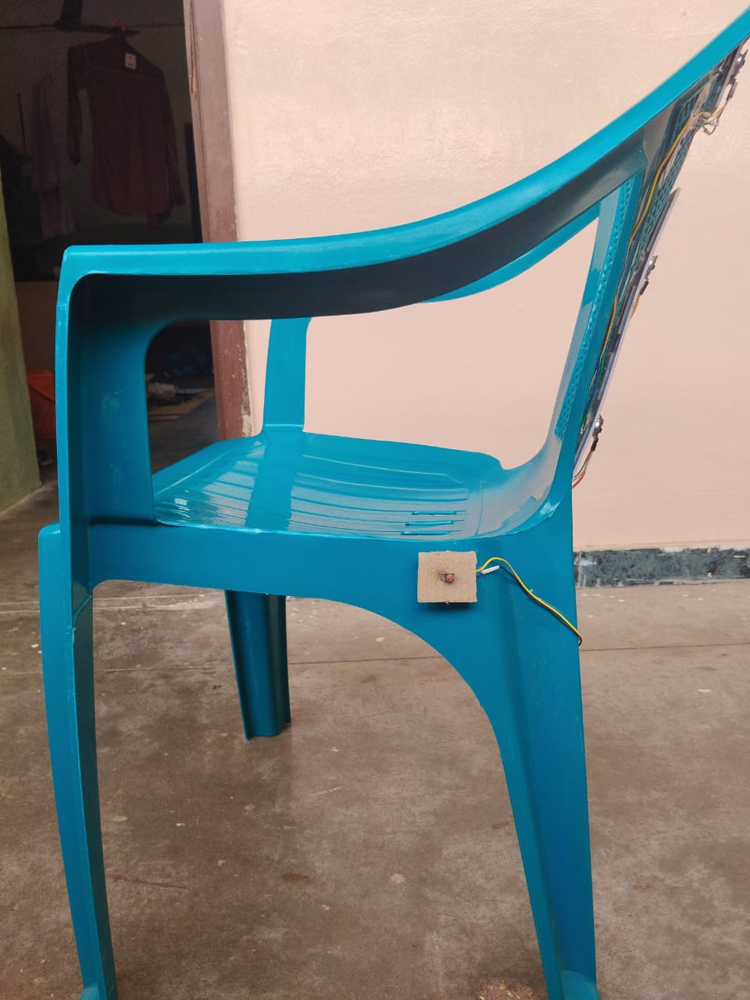
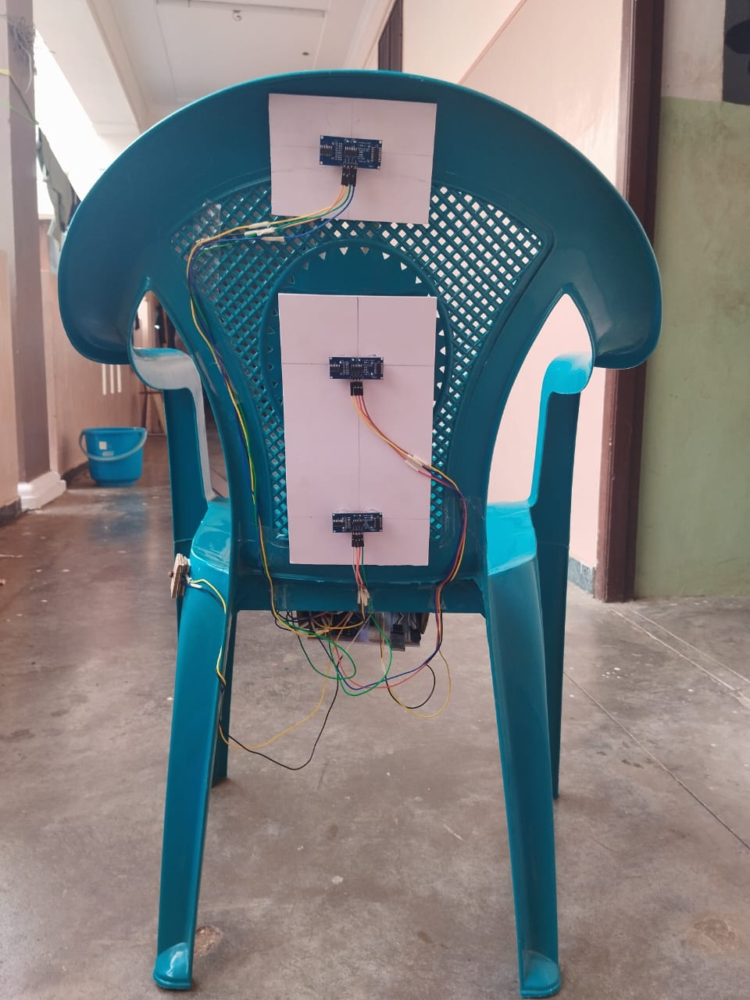
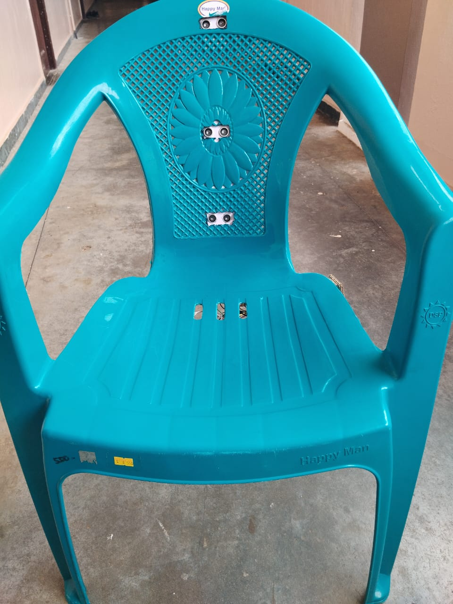
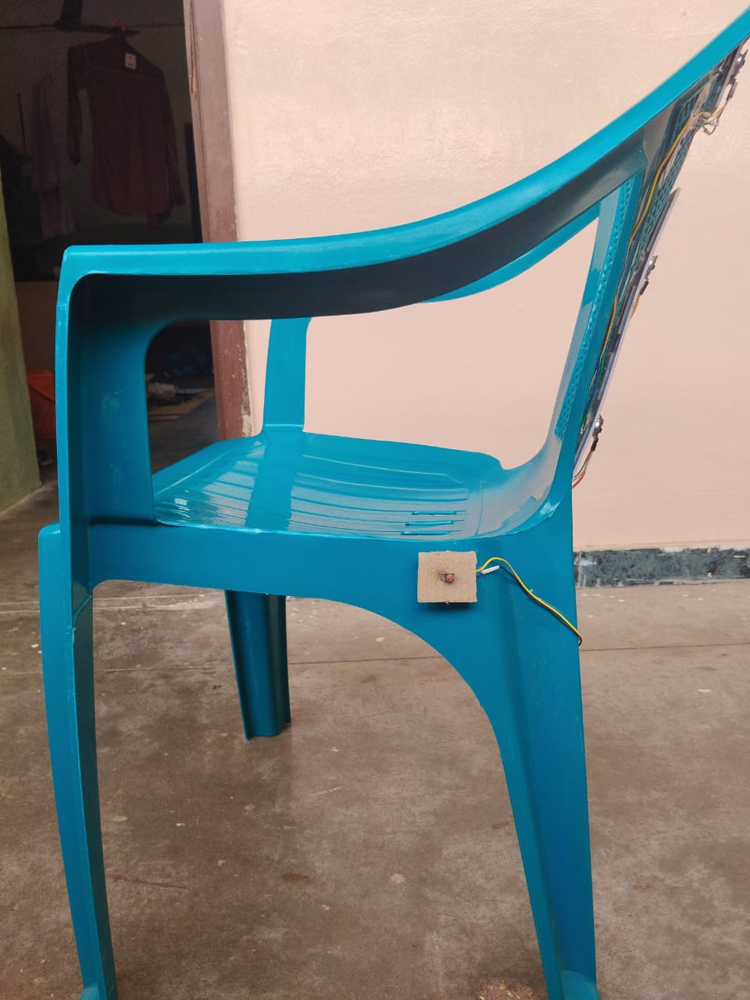
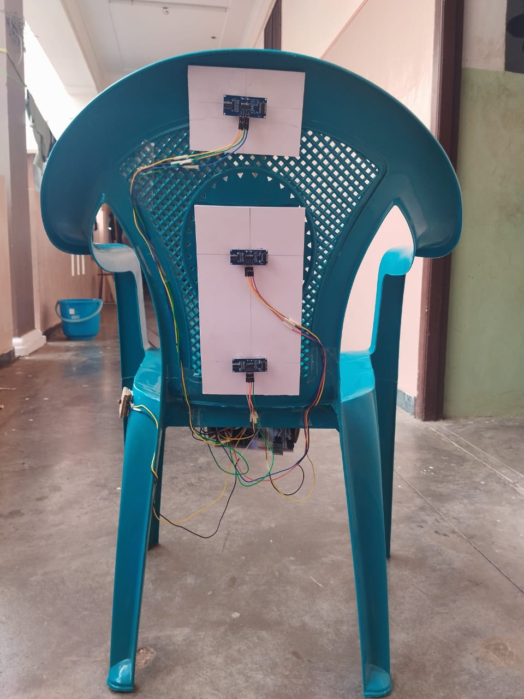
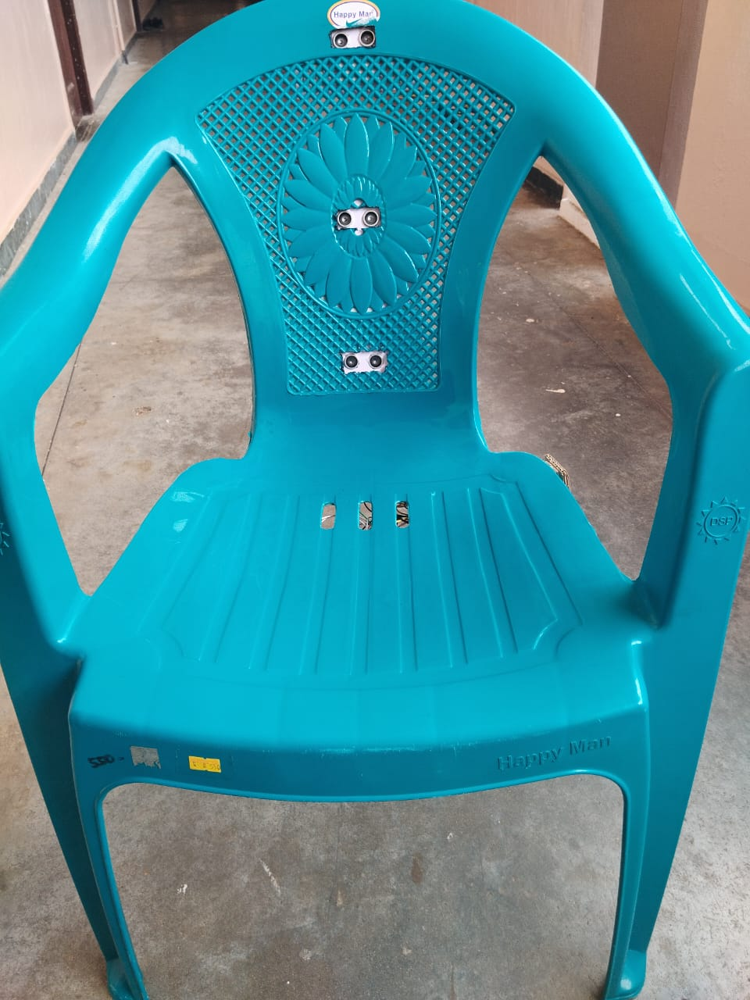
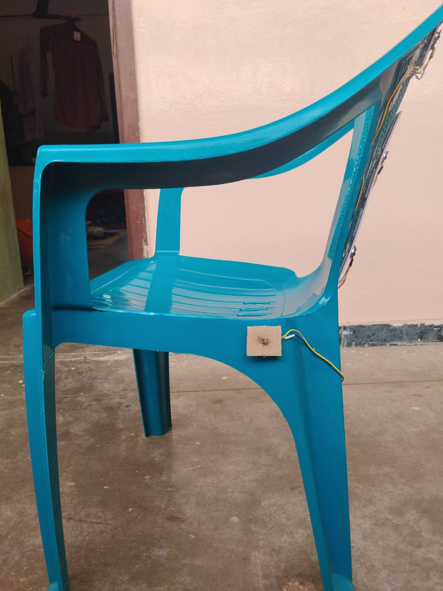
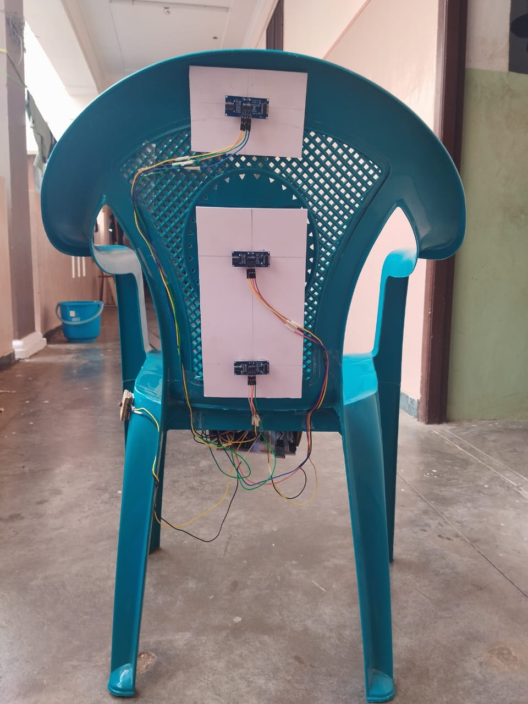
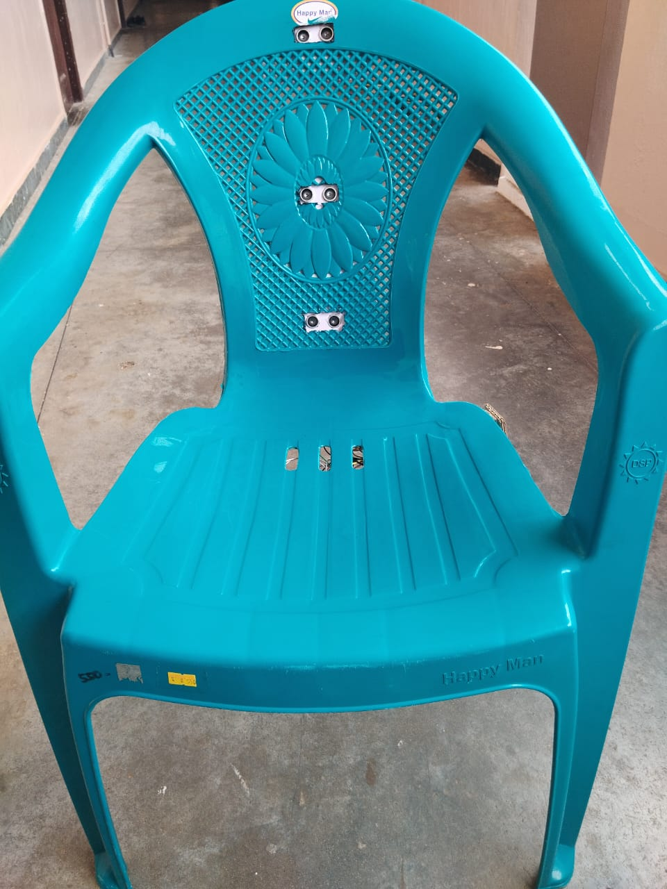

Project Images & Video
 





Department of Electronics and Communication Engineering
Thiagarajar College of Engineering
In today’s fast-paced digital world, people—especially students and professionals—spend long hours sitting. Poor sitting posture has quietly become a major health concern. The SitRight Chair, developed by Team QUARKS, aims to encourage healthy sitting habits through a simple, affordable, and user-friendly design. This project blends ergonomics and awareness to reduce problems like back pain, spinal stress, and fatigue that arise from incorrect sitting positions.
“The greatest threat to our planet is the belief that someone else will save it.” – Robert Swan
Long study or work hours lead to slouching and incorrect posture, resulting in neck, back, and spine problems. There is a strong need for a cost-effective chair attachment that helps users recognize and correct posture in real time.
Purpose: To learn about user posture habits and expectations.
Method: Online surveys and direct discussions with students, faculty, and office staff.
Conclusion: Users want a non-intrusive, comfortable, and low-cost solution that quietly improves posture awareness.
| Aspect | Description |
|---|---|
| Primary Users | Students, office workers, elderly users |
| Application Area | Schools, offices, libraries, homes |
| Goal | Encourage posture awareness & healthy sitting |
| Affordability Target | Below ₹1000 |
| Design Focus | Comfort • Safety • Privacy |
| Sustainability | Low power • Durable materials |
| Ethical Boundary | No cameras or personal data collection |
Techniques Used: Mind-mapping • SCAMPER • Feedback sessions.
Reason for Selection: Simple • Low cost • Non-contact • Portable • Privacy-safe.
| Stakeholder | Type | Interest | Power | Expectation / Role |
|---|---|---|---|---|
| Students | Direct | High | Medium | Need affordable ergonomic comfort |
| Office Workers | Direct | High | Medium | Require portable posture aid |
| Elderly Users | Direct | Medium | Low | Expect safe & easy operation |
| Faculty Mentors | Direct | Medium | High | Guide feasibility & innovation |
| Institution / College | Indirect | High | High | Promote SDG 3 & health awareness |
| Healthcare Experts | Indirect | High | Medium | Validate ergonomic effectiveness |
| Vendors / Suppliers | Indirect | Medium | Medium | Provide low-cost components |
| Parents / Families | Indirect | Medium | Low | Support posture habits at home |
| NGOs / Health Bodies | Indirect | Medium | Medium | Spread posture-health awareness |
| Investors / Start-up Cells | Indirect | Medium | High | Offer funding & incubation |
Direct Stakeholders: Students, workers, elderly users, and mentors who directly influence or use the chair.
Indirect Stakeholders: Institutions, suppliers, NGOs, families, and investors who support or are impacted indirectly.
Engagement Plan:
| Category | Evaluation Focus |
|---|---|
| Technical | Feasibility of simple sensing concept |
| Functional | Comfort and clarity of posture alert |
| Economic | Cost within reach of students |
| Social | Awareness and lifestyle improvement |
| Environmental | Low power use and eco materials |
| Sustainability | Durability and maintenance ease |



| Component | Description | Cost |
|---|---|---|
| Microcontroller (ESP32 / Arduino Uno) | Acts as system CPU; ESP32 includes built-in Wi-Fi and Bluetooth. | ₹200 – ₹250 |
| Ultrasonic Sensors (HC-SR04) – 3 Units | Non-contact distance measurement for posture angle detection. | ₹250 – ₹350 |
| HC-05 Bluetooth Module | Wireless transmission to mobile app (needed only for Arduino). | ₹250 – ₹300 |
| SD Card Module + SD Card | Stores 8–10 hours of posture logs for daily analysis. | ₹250 – ₹300 |
| Plastic Molded Chair | Prototype mounting structure; lightweight and durable. | ₹200 – ₹300 |
Total Estimated Cost: ₹1,150 – ₹1,500
| Criteria for Comparison | Weight | Reason for Criteria | Option 1: Arduino UNO (Selected) | Option 2: ESP32 | Option 3: Raspberry Pi Pico |
|---|---|---|---|---|---|
| 1. Ease of Prototyping | 5 | For PoC, fast development is required | Very Easy – Arduino IDE, huge community, simple programming | Moderate – Requires configuring multiple libraries | Moderate – Needs MicroPython/C++ setup |
| 2. Sensor Compatibility (Ultrasonic) | 5 | Ultrasonic sensors need stable 5V & clean trigger/echo signals | Excellent – Built-in 5V output, direct HC-SR04 support | Good – Needs 5V to 3.3V logic conversion | Good – 3.3V logic, also needs conversion |
| 3. Real-Time Performance | 4 | Posture detection requires consistent timing | High – Perfect for real-time loops | Very High – Faster with dual-core | High – Fast enough |
| 4. Ease of Integration in Chair Prototype | 3 | Must physically fit and connect easily | Easy – Small board, simple wiring | Difficult – Needs wireless setup | Easy – Small form factor |
| 5. Power Requirement | 3 | Should run on power bank | Low Power (5V) – Very stable | Medium (3.3V) | Low |
| 6. Cost | 4 | Hackathon constraints | ₹450–550 (Cheap) | ₹800–1000 | ₹500–600 |
| 7. Debugging Simplicity | 3 | Faster testing = faster PoC | Very Easy (Serial Monitor) | Moderate | Easy |
| 8. Wireless Features | 1 | Not required for PoC | Not available (but not needed) | Available (WiFi + Bluetooth) | Not available |
| 9. Overall Suitability for PoC | — | Final decision | Selected (Best for quick prototype) | Overkill for PoC | Suitable but less convenient |
| Requirement | Stakeholder | Testing Place | Status |
|---|---|---|---|
| Bad posture detection | Students | Lab (10 users) | Incompleted |
| Mobile notification | Guide + Users | Bluetooth App | Incompleted |
| Full-day data logging | Review Panel | 8–10 hr test | Incompleted |
| Total Cost < ₹1500 | Guide | BOM review | Incompleted |
| Comfort & lightweight | Users | 2-hour trial | Incompleted |
| Offline working | Users | Bluetooth + SD | Incompleted |
The SitRight Chair by Team QUARKS demonstrates how design thinking and empathy can solve everyday health challenges. This project aims not just to correct posture but to create awareness, encourage comfort, and build a healthier sitting culture for students, workers, and communities.
“Good posture is the first step toward good health.”